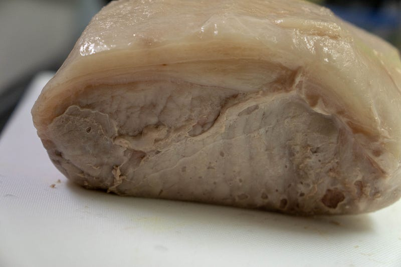
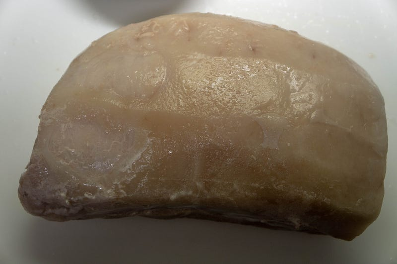
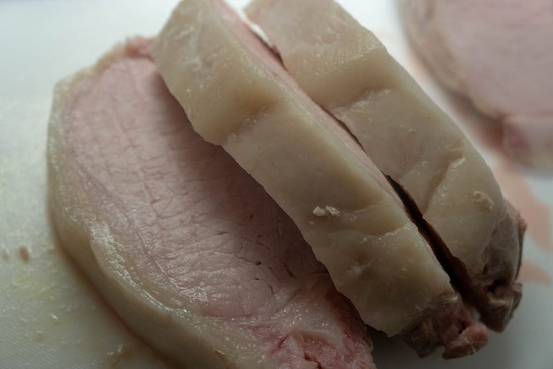
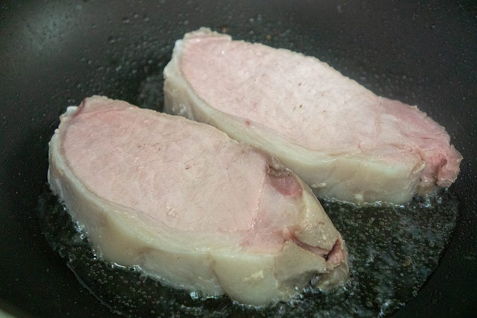
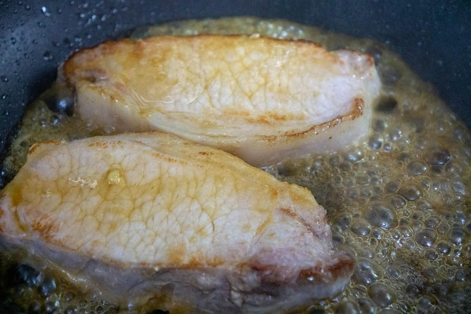
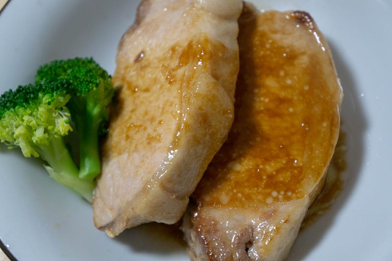
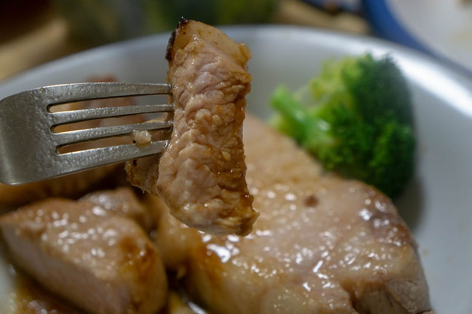

禁断のポークジンジャーをanovaで作る
禁断のポークジンジャーをanovaで作る
このところOxygen Not Includedというゲームにかまけてて料理ブログを一切更新していなかったが、今日は久しぶりにハナマサで豚ロース肉の塊を買ったので、ポークジンジャーを作る事にする。
ポークジンジャーって結局しょうが焼きなわけだが、わざわざ横文字を使っているのはイメージしていたのは旧キラク（現そよいち）のポークソテーがイメージだからである。
そよいちはお家騒動がある直前から通わなくなって久しいのだが、あそこのポークソテーは厚くて柔らかくてうまかったのである。
ロース肉を厚くすると、料理素人な俺達はつい肉を硬くしてしまいがちだが、俺達にはanovaがあるじゃないか！anovaを使えば柔らかくて、生姜焼きと呼ぶには厚すぎる、禁断のポークジンジャーができるはずだ。
Anova Culinary PCB-120US-K1 Bluetooth Precision Cooker, Black by Anova…amzn.to
というわけで 軽く塩したロース肉の塊約1.5kgを58.5℃で4時間やりました。 目指している食感はあくまで普通にポークジンジャーを作った時の噛み応え。老人食みたいなのは今回は目指していない。


これを厚く切るけどさすがに牛ステーキの時の3cmはアレなので、2cmくらい…

この火の通り方を見る限り、もう1℃くらい低くしても大丈夫だったか…？ Z値の検証をしてないので、適当に言ってます。自分でやる際はちゃんと確認してからにしてくださいね。

焼き目をつけます。

ショウガ、にんにく、砂糖、塩、醤油、つゆのもと少々、水を混ぜた物を投入して味つけ。

残った汁を少し煮詰めてかけます。

うまい！
最初に書いた通り、今回狙ったのは「普通の食感」。充分柔らかいけど、ちゃんと豚ロース肉独特の噛み応えが残っているくらいのかたさ。低温調理はこの辺を狙った通りにできるのが本当によい。
ところでもしこれを他人に出しても、普通に調理したのと違いがよくわからないと思うので、もし「低温調理した…」として出すなら、もっとアメリカのBBQポークくらいのホロホロを目指してもいいのかもしれない（ロース肉では脂肪分が少なくてそうはいかないだろけど）
また忘れない内に57.0℃8時間くらいの目処で一回やってみたい。